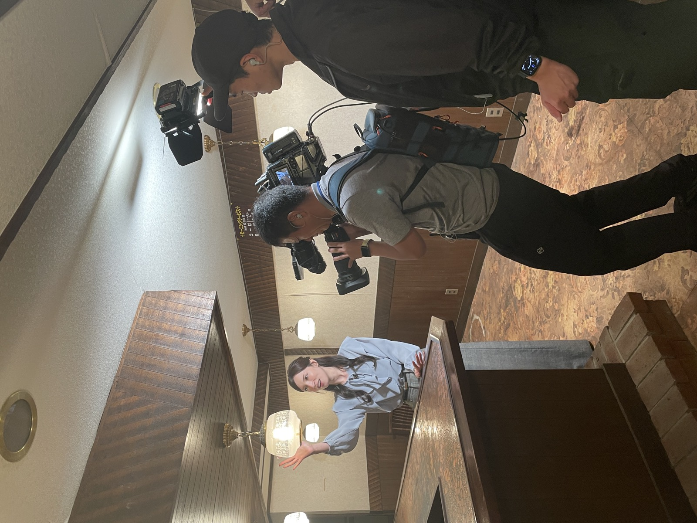
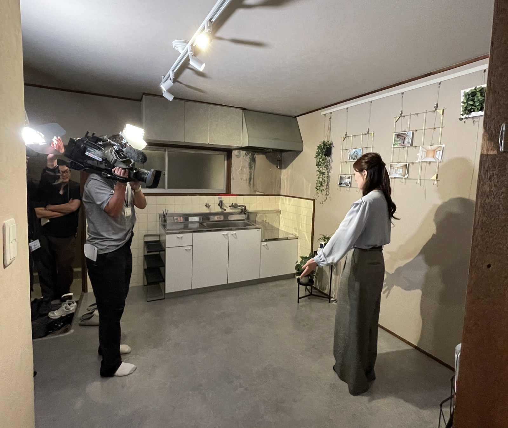
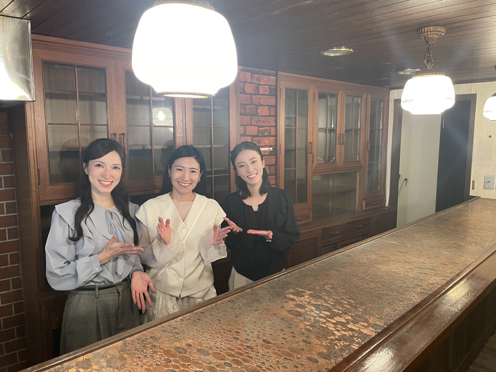

15年住めば家がもらえる!? 空き家活用の新モデルも
2026年10月20日（火）放送のテレビ大阪「やさしいニュース」にて、 全国で深刻化する放置空き家と「空き家税」をめぐる特集の中で、 株式会社SOTTOが取り組む空き家活用の新しいモデルをご紹介いただきました。
「15年住めば家がもらえる!?」——借りて住み続けることで、いずれ住まいが入居者のものになっていく “譲渡型賃貸”という仕組みを通じて、空き家を「負動産」から暮らしの資産へと変えていく取り組みについて、 代表・増田早紀への取材とともに取り上げていただいています。放送内容は上の映像でご覧いただけます。
丁寧に取材・ご紹介くださったテレビ大阪「やさしいニュース」のみなさまに、心より御礼申し上げます。
あわせて、テレビ東京「Newsモーニングサテライト」では、 関西の中継地点として、神戸・鈴蘭台の地域交流型アトリエ 「すずらんテラス SOTTO」から 生放送でお届けいただきました。



すずらんテラス SOTTO 1階の喫茶からの生中継の様子（2026年10月22日）